Los Santos é uma cidade localizada no sul do estado de San Andreas no condado de mesmo nome, nos
Estados
Unidos, é a cidade mais populosa e a maior cidade em território de todo o estado, sua
população em 2013 é de aproximadamente 10.000.000
Milhões de pessoas.
A cidade de Los Santos reaparece em Grand Theft Auto , muito maior e muito mais
detalhada do que na sua aparição anterior, no caso GTA San Andreas. Sua reprodução em
GTA V ficou muito mais fiel a cidade da vida real no qual foi inspirada, que é a região
metropolitana de Los Angeles, no estado da Califórnia. Seu fuso horário é o UTC -8, assim como
na cidade de Los Angeles.
Assim como Los Angeles, Los Santos é uma grande metrópole ensolarada, sua cultura é constituída a
partir não só dos estados-unidenses, mas de vários outros povos diferentes, como os Mexicanos,
Asiáticos, Sul-americanos, e outras civilizações europeias diferentes, cerca de 30% da sua
população é de origem espanhola.
Los Santos é dividida em 36 bairros e distritos diferentes, antigamente alguns distritos eram
outras cidades, mas a medida que a cidade foi se expandindo estas comunidades foram incorporadas
ao condado:
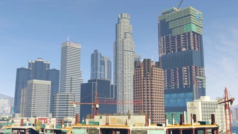
Centro de Los Santos
O Centro de Los Santos é o centro financeiro e também sua área mais desenvolvida, aqui se
encontram os mais altos arranha céus da cidade, sendo o maior o Maze Bank Tower, seguido
pelos prédios do FIB e da IAA, pelo edifício da Union Depository, e do Mile High Club,
um prédio ainda em construção.
Este distrito é composto por Pillbox Hill, Mission Row, Textile City e pela Legion
Square.
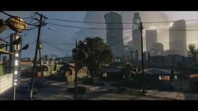
South Los Santos
Uma área economicamente deprimida, predominantemente afro-americana da cidade,
caracterizada por gangues de rua e conjuntos habitacionais de baixa renda. A zona sul de
Los Santos é dividido nos bairros de Strawberry, Rancho, Chamberlain Hills e Banning, e
também contém a cidade incorporada de Davis.
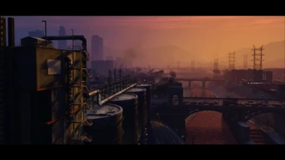
East Los Santos
Um grande distrito com uma alta concentração de moradores latinos e uma forte presença de
gangues, em particular o Los Santos Vagos e Marabunta Grande. Embora o distrito seja
basicamente industrial, tem experimentado a gentrificação nos últimos anos. A zona leste
de Los Santos é dividido pelos bairros La Mesa, Cypress Flats, El Burro Heights e
Murrieta Heights.
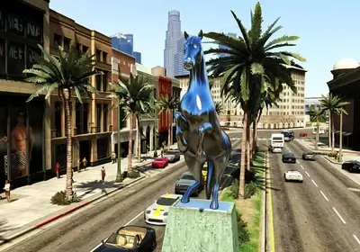
Rockford Hills
Rockford Hills é uma área de alto padrão, é predominantemente uma área de shoppings onde
vendem-se objetos de alto valor além contar com vários apartamentos de classe
média-alta.
Este distrito um dia já foi uma cidade independente, mas foi incorporada a Los Santos
mais tarde, sue bairro adjacente é Burton. Rockford Hills significa em português:
Colinas de Rockford.
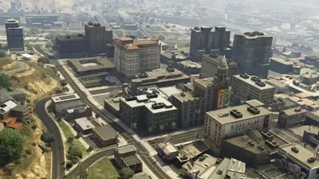
Vinewood
Vinewood é o distrito mais icônico de Los Santos, com seus edifícios art-decó dos anos 40
de alto padrão que conseguiram trazer os moradores mais abastados da cidade e da região,
seu charme é único e sua vista é deslumbrante. A indústria cinematográfica funciona a
todo vapor por aqui.
Este distrito é composto pelos bairros de Alta, Hawick, Vinewood Hills, West Vinewood,
East Vinewood e Mirror Park.
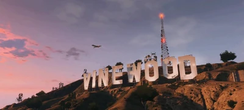
Vinewood Hills
Vinewood Hills fica localizado nas montanhas ao norte de Vinewood, aqui se localiza um
dos principais cartões postais da cidade, o Letreiro de Vinewood, além de várias mansões
onde abrigam as estrelas do cinema Vinewoodiano. Vinewood Hills significa Colinas de
Vinewood em português.
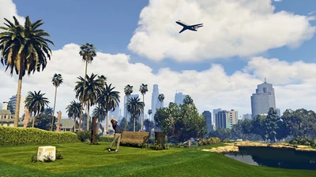
Richman
Richman é um distrito extremamente rico, mansões gigantes são encontradas aqui, além de
um notável clube de golfe, o Los Santos Golf Club, que conta com áreas de recreações
exclusivas. Richman significa literalmente "Homem Rico" em português.
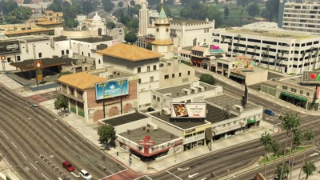
Morningwood
Morningwood é um dos distritos mais tranquilos de se viver, uma mistura de bairros
residencias com comerciais, este distrito conta com seus maravilhosos teatros
históricos.
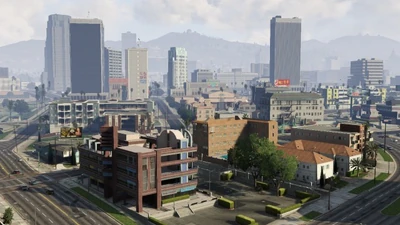
Little Seul
Localizado na parte central de Los Santos é uma área residencial de classe média que
abriga diversos povos asiáticos, com predominância para os sul-coreanos. Seu nome
significa literalmente "Pequena Seoul" (Seoul é a capital da Coréia do Sul).
Del Perro
Del Perro é uma comunidade a beira-mar, e conhecida pelas suas belas praias e pelo seu
famoso "Del Perro Pier", um pier com um parque de diversões que atrai muitos visitantes.
Del Perro significa literalmente "Do Cachorro" em espanhol.
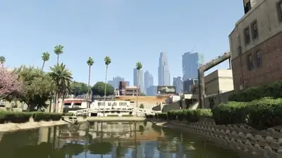
Vespucci
Vespucci é um distrito a beira-mar de predominância residencial, muito conhecida pelos
seus canais, pelas sua praia, e pela mundialmente famosa calçada de Vespucci Beach.
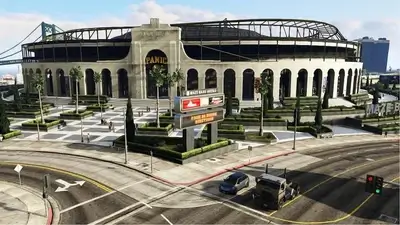
La Puerta
Uma comunidade que tem fortes raízes na indústria da pesca, La Puerta é totalmente
industrial e abriga outro cartão postal da cidade, o estádio Maze Bank Arena.
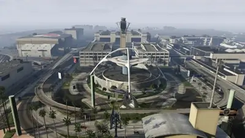
Aeroporto Internacional de Los Santos
Este é um dos aeroportos mais movimentados do planeta e um dos maiores do mundo, próximo
a ele se localizam vários hotéis, terminais de ônibus e estações de metrô para acomodar
e transportar milhares de passageiros por dia.
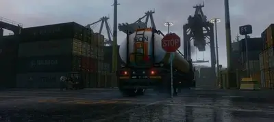
Porto de Los Santos
O Porto de Los Santos é um dos maiores e mais movimentados portos da América.
Este distrito é dividido em vários bairros industriais entre eles: Elysian Island, onde
fica o Pier 400, o Naval Port, o Terminal e o bairro de Banning.
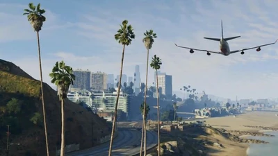
Pacific Bluffs
Lar do famoso museu, o Kortz Center, o Pacific Bluffs é praticamente a entrada da cidade,
além de ser um distrito bem afastado do centro da cidade, aqui se localizam diversos
casarões que descansam sobre a vista do mar.
Transporte
Los Santos oferece uma vasta gama de serviços de transporte público, auto-estradas que cruzam a
cidade inteira e várias outras rodovias menores, com várias saídas e rampas de acesso ao redor
da cidade. A cidade também tem seu próprio sistema de trens elétricos (Metrô)
chamado de Los Santos Transit. Os ônibus também podem ser vistos sendo gerados no tráfego em toda a
cidade.
Como a maioria das cidades, o tráfego de Los Santos é monitorado e controlado pelo Sistema
de Controle de Tráfego de Los Santos que permite a cidade controlar semáforos e manipular
condições e o fluxo de veículos nas ruas e estradas.
Aeroporto Internacional de Los Santos (LSX) está localizado na parte sudeste de Los Santos e
é o único e maior aeroporto da cidade.
Clima
De modo geral o clima de Los Santos é mediterrâneo e ensolarado, mas mesmo assim é possível
presencial dias de chuva na cidade e nas regiões próximas.
Devido a sua extensa área, Los Santos está fortemente poluída, com uma poluição atmosférica
(''smog'') comum durante a tarde e nas primeiras horas da manhã devido ao alto tráfego de
carros. À noite, o céu geralmente adquire uma cor laranjada escura devido as luzes e a
densidade urbana, especialmente quando está nublado ou chovendo. De acordo com um anúncio de
rádio, Los Santos foi nomeado "a cidade mais poluída do mundo", em 2013, à frente de Pequim,
capital da China.
A partir de dezembro do Ano 2013, entre os dias 24/26 a Rockstar adicionou neve para Grand Theft
Auto
Online. A neve cobriu toda a cidade e era visível de Blaine County. Durante este
tempo, os dias eram mais curtos e as noites eram mais escuras, replicando um inverno da vida
real. A partir de dezembro 24-26 de 2014, reapareceu a neve através de um DLC. A
neve também estava presente a partir de 31 de dezembro de 2014 a 2 de Janeiro de 2015. o mesmo
aconteceu em 2016/2017.
Pontos Turísticos
Arranha-céus e edifícios corporativos
Los Santos não é tão conhecida como Liberty City por sua paisagem urbana, mas muitas empresas
importantes, bem como agências governamentais, como a FIB e IAA, estão sediadas aqui. A maior
parte dos arranha-céus da cidade está localizada no Centro de Los Santos, e os outros estão
espalhados pelos distritos próximos de Little Seoul e Rockford Hills.
3 Alta Street Tower (edifício com lojas de departamentos)
707 Vespucci (edifício com os escritórios da Gruppe 6 e da GoPostal)
Arcadius Business Center (edifício com escritórios para Organizações)
Badger Building (edifício com escritórios da Badger... paródia da operadora de celulares
T-Mobile)
FIB Headquarters (sede regional da FIB... paródia do FBI)
IAA Headquarters (sede regional da IAA... paródia da CIA)
Little Seoul Tower (edifício com escritórios das empresas BAWSAQ, Schlongberg Sachs, Total
Bankers e International Online Unlimited)
Lombank West (edifício de escritórios do banco Lobank... paródia dos bancos Citibank e HSBC)
Lombank Tower (edifício de escritórios do banco Lobank)
Maze Bank Tower (sede do banco Maze Bank... paródia do U.S Bank [tradução livre: Banco dos
Estados Unidos])
Mile High Club (edifício ainda em construção)
Penris Building (edifício de escritórios da ONG Penris... paródia da Orbis)
Richards Majestic Tower (sede dos estúdios de cinema Richards Majestic ... paródia da
MGM)
Schlongberg Sachs Center (sede da empresa financeira Schlongberg Sachs... paródia da Goldman
Sachs)
Union Depository Tower (sede regional da Union Depository... paródia da Federal Reserve, o
Banco Central dos EUA)
Weazel Plaza (sede da Rede Weazel de Televisão... paródia da FOX)
Wiwang Tower (sede da empresa fictícia Wiwang)
Edifícios Residenciais
Além das casas, há também grandes prédios de apartamentos para as pessoas morarem. Esses
edifícios são tipicamente de alta qualidade e chegam a milhares de dólares em preço, exceto os
projetos habitacionais de baixa renda da zona sul de Los Santos.
Dream Tower
Eclipse Towers
Kayton Towers
Rancho Projects
Tinsel Towers
Recreação e esportes
Los Santos não é apenas famosa por sua cultura cinematográfica, mas também por seus esportes. Há
muitas equipes esportivas famosas em Los Santos que têm fãs discutindo sobre elas no Lifeinvader.
Times Esportivos
Boars Baseball Club (time de beisebol, não joga nas grandes ligas)
LS Squeezers (time de beisebol)
LS Pounders (time de futebol americano; paródia do Los Angeles Rams)
Los Santos Corkers Baseball Team (time de beisebol; paródia do Los Angeles Dodgers)
Feud Baseball Team (time de beisebol; não joga nas grande ligas)
Los Santos Kings (time de hóquei no gelo; paródia do Los Angeles Kings)
LS Benders (time de futebol de campo; paródia do Los Angeles Galaxy)
U.C.L.S. Bookworms (time universitário da cidade)
Los Santos Panic Basketball Team (time de basquete; paródia do Los Angeles Lakers)
San Andreas Magnetics (time de futebol americano; paródia do Los Angeles Chargers)
LS Jardineros (time de futebol de campo)
Los Santos Shrimps (time de basquete; paródia do Los Angeles Clippers)
Locais de Entretenimento
Del Perro Plaza (um shopping center)
Los Santos Golf Club (clube para a prática de golfe da cidade)
Maze Bank Arena (estádio poli-esportivo da cidade)
Pleasure Pier (um Parque de Diversões)
Puerto Del Sol Yacht Club (clube de iatismo da cidade)
Rockford Plaza (um shopping center)
Vinewood Bowl (anfiteatro da cidade... também um local aonde acontecem shows de artistas musicais)
Vinewood Racetrack (hipódromo da cidade)
Infraestrutura
Porto e Aeroporto
Los Santos tem um dos aeroportos mais movimentados do mundo, juntamente com um dos portos mais
movimentados do mundo. No LSX, as pessoas estão viajando de e para Los Santos todos os dias,
embora não haja infraestrutura suficiente para suportar toda essa atividade. O porto é usado
principalmente para mercadorias chinesas e cargas suspeitas.
Aeroporto Internacional de Los Santos
Porto de Los Santos
Estradas Importantes/Ruas
Los Santos também é conhecida por seu congestionamento de tráfego pesado e um grande sistema de
auto-estradas, interestaduais e rodovias que percorrem toda a cidade. Viajantes podem ser vistos
aqui dia e noite.
La Puerta Freeway
Elysian Fields Freeway
Los Santos Freeway
Del Perro Freeway
Olympic Freeway
Palomino Freeway
Senora Freeway
Great Ocean Highway
Bay City Avenue
Carson Avenue
Dorset Drive
Eclipse Boulevard
Elgin Avenue
Hawick Avenue
Innocence Boulevard
Marlowe Drive
North Rockford Drive
Palomino Avenue
Popular Street
Portola Drive
San Andreas Avenue
Strawberry Avenue
Vespucci Boulevard
Vinewood Boulevard
West Eclipse Boulevard
Arte e Cultura
Antes da era da Internet, as pessoas iam aos vários cinemas de Los Santos para ver filmes. Estes
cinemas têm sido usados desde o século 20 e são o que fizeram a indústria cinematográfica de
Vinewood famosa. Há também museus de arte e galerias localizadas em toda a LS.
Betsy O'Neal Pavilion (Centro de Artes Cênicas)
Doppler Cinema (Cinema)
Kortz Center (Museu de Arte e Entretenimento)
Oriental Theather (Cinema)
Galeria de Arte Moderna San Andreas
Sisyphus Theater (Teatro)
Ten Cent Theather (Cinema)
Tivoli Cinema (Cinema)
Valdez Theather (Teatro)
Whirligig Theather(Cinema)
Weazel Morningwood (Cinema)
Governo
Cada uma das cidades incorporadas dentro da área metropolitana de Los Santos tem uma prefeitura
representativa, enquanto o centro do governo da cidade está localizado no bairro de Alta:
Prefeitura de Los Santos
Prefeitura de Davis
Prefeitura de Del Perro
Prefeitura de Rockford Hills
Marcos
emblemáticos
Há também muitas armadilhas para turistas em Los Santos. Esses marcos são o que dão a cidade uma
imagem glamurosa.
Rancho Towers (Watts Towers)
Sightings Bar & Restaurant (Theme Building)
Tequi-la-la (Whisky a Go Go)
Vinewood Boulevard (Hollywood Boulevard)
Letreiro de Vinewood (Letreiro de Hollywood)
Educação
Los Santos é o lar de algumas escolas e outras instituições educacionais. A mais
famosa delas é a Universidade de San Andreas, em Los Santos, onde os alunos mais
privilegiados participam de boas carreiras. As únicas instituições de ensino básico/fundamental
encontrada no jogo GTA V é a Los Santos Elementary (tradução livre: Fundamental de Los Santos ou
Básico de Los Santos), onde as crianças conhecem as habilidades básicas de aprendizado
necessárias para o sucesso. Sue Murry costumava ensinar aqui. Na cidade incorporada de Davis, há
o único colégio de ensino secundário/médio encontrado no jogo: Davis High School (tradução
livre: Colégio de Davis ou Colégio de Ensino Médio/Secundário de Davis).
Davis High School (Compton High School)
Los Santos Elementary
Universidade de San Andreas, Los Santos (Universidade da Califórnia, Los Angeles)
Saúde
Los Santos possui uma grande variedade de hospitais e centros médicos. Há muito hospitais
sofisticados, como o Mount Zonah Medical Center, enquanto há muitos mais baratos, como o St.
Fiacre Hospital.
Central Los Santos Medical Center (Los Angeles County General)
Eclipse Medical Tower (Sunset Medical Tower)
Mount Zonah Medical Center (Cedars-Sinai Medical Center)
Pillbox Hill Medical Center (California Hospital Medical Center)
St. Fiacre Hospital
Segurança
O Departamento de Polícia de Los Santos (LSPD) é a agência policial que serve a cidade de Los
Santos. Eles são baseados na vida real no Departamento de Polícia de Los Angeles. Seu lema é
"Obedecer e Sobreviver", que estar inscrito em seus carros-patrulha e também reflete sobre sua
natureza corrupta. Ao contrário do LCPD (Departamento de Polícia de Liberty City), eles usam
Vapid Police Cruisers e também usam o Vapid Interceptor, ao contrário do Police Patrol, mas
ainda usam o Police Maverick como seu esquadrão principal e unidades de helicóptero,
respectivamente. O LSPD é acusado de corrupção e racismo, bem como sua versão na vida real.
NOOSEE
O Escritório Nacional de Execução de Segurança também está presente na cidade de Los Santos, uma
vez que uma de suas filiais está localizada na área do Aeroporto Internacional de Los Santos,
enquanto sua sede principal está localizada nas Terras Altas de Palomino, a nordeste da cidade.
Quando há atividade criminosa perigosa, NOOSE é implantado na cena.
Justiça
Criminal
Embora não seja visto no jogo, Los Santos opera um sistema de justiça criminal. Em um segmento de
rádio da Weazel News, um tribunal conhecido como o Tribunal Superior de Los Santos é mencionado.
Crime
Los Santos também é a fortaleza do submundo criminoso. Alguns dos bairros de Los Santos sofrem
com altas taxas de criminalidade, especificamente na parte sul da cidade. Desde a década de
1990, Los Santos é afetada principalmente por tráfico de drogas entre muitas gangues da cidade.
Essas drogas incluem crack, metanfetamina e maconha, bem como uma nova droga chamada "Toilet
Cleaner". Apesar de todo o crime em Los Santos, a cidade ainda permanece mais segura do que
Liberty City.
Além do contrabando de drogas, a cidade sofre com violência, assassinatos e brigas de gangues na
parte sul da cidade (principalmente Chamberlain Hills, Davis e Strawberry). A maioria desses
crimes é causada pelas duas gangues de rua afro-americanas, The Families e os Ballas. Eles
também estão envolvidos no tráfico de armas, trazendo armas ilegais, como rifles de assalto e
SMGs.
Além de pequenas gangues de rua, também há grupos influentes e organizados do crime na cidade. O
Marabunta Grande, um poderoso sindicato do crime salvadorenho, está expandindo suas operações
para Los Santos. Eles têm rivalidades ferozes com outras gangues em toda San Andreas que estão
envolvidas no comércio de narcóticos.
Não só existe alta atividade criminosa, mas também existe uma corrupção generalizada entre os
funcionários municipais e até mesmo a polícia. O LSPD é conhecido por sua brutalidade policial;
houve até um caso em que eles atiraram e mataram um cachorro. De acordo com algumas fontes, os
oficiais LSPD também são conhecidos por contratar prostitutas, o que pode explicar a alta
presença de prostituição, mesmo nas partes mais abastadas da cidade.